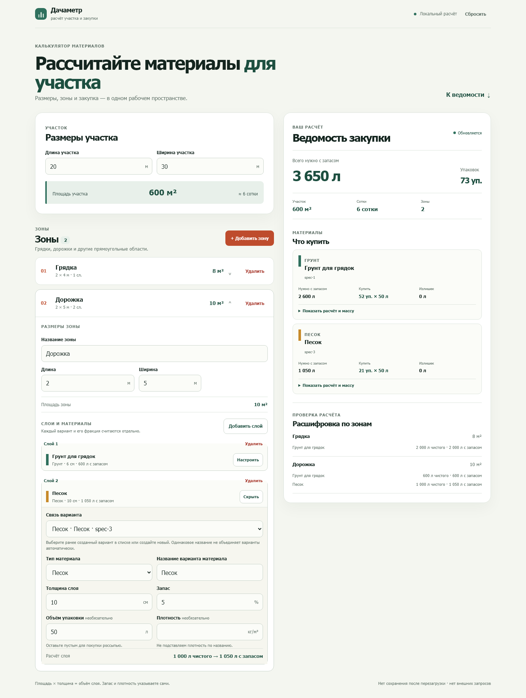
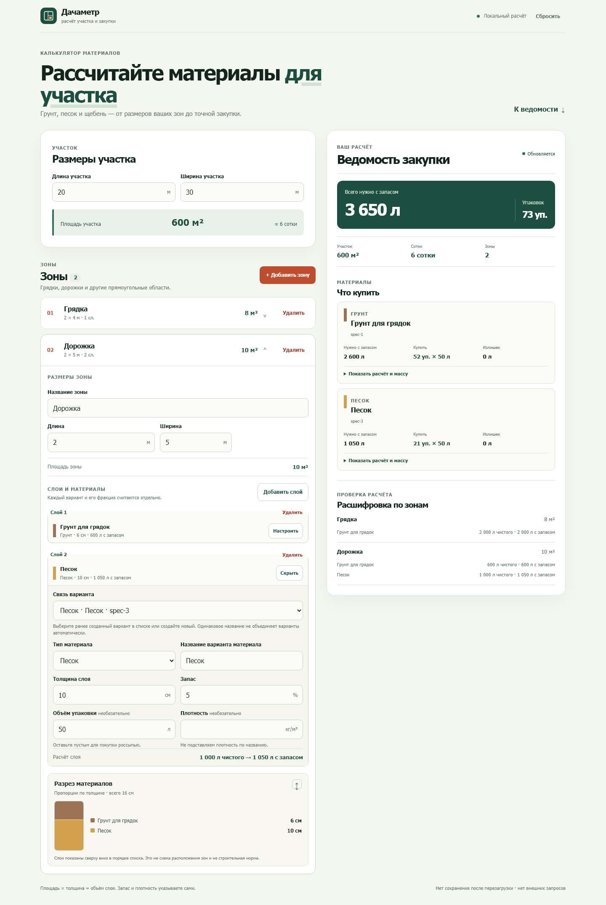
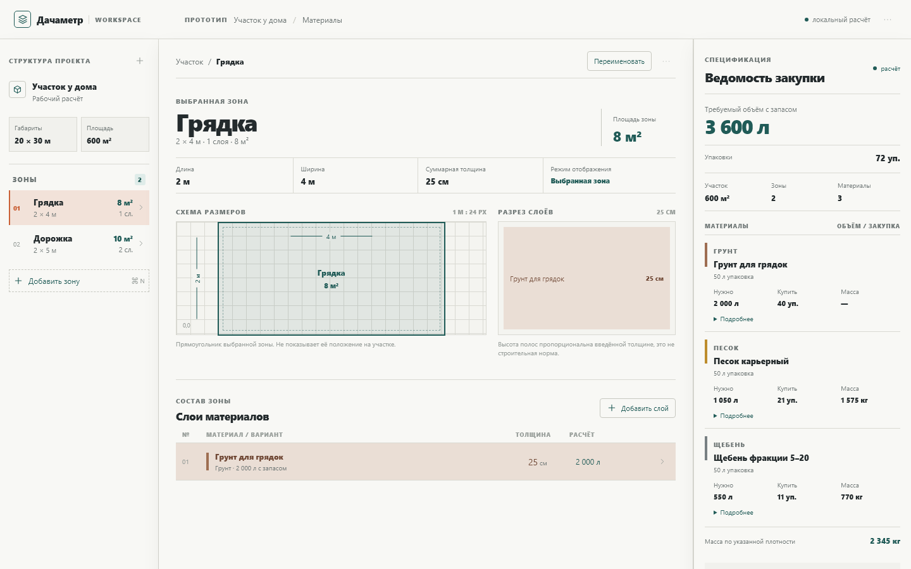

VISUAL AUDIT / COMPOSITION
Открыть workspace ↗Почему это не PR #11 и не PR #12
Одинаковый рабочий сценарий, снятый в Chromium на exact baseline SHA. Сравнивается структура, а не только цвет.



PR #11 / #12
Главный поток — длинная вертикальная форма слева, результат справа. Зоны открываются внутри списка, а рабочее пространство считывается как калькулятор.
WORKSPACE
Главный поток — выбранная зона как объект редактора. Структура проекта, свойства и BOM имеют устойчивые места; мобильный вариант переключает surfaces вкладками.